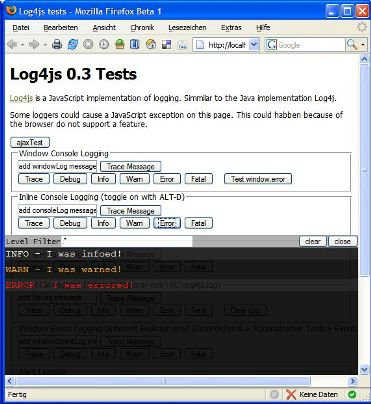
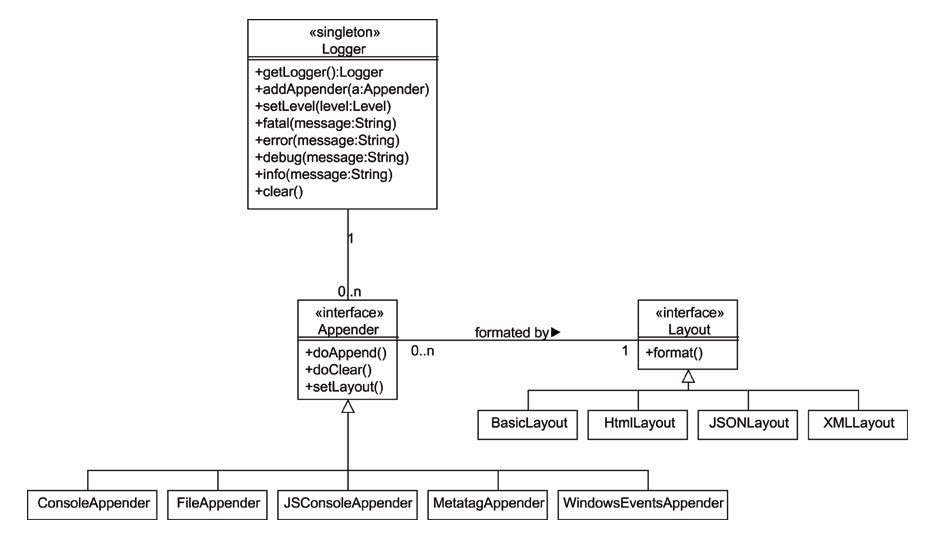

Log4js - Users Guide
Introduction
Log4js is a very small but usefull JavaScript library to log events in your scripts. Often it is not useful to use alert('debug message'); spreaded through your code. On the other hand a debugger like venkman can help you also only if you debug on your own computer and when you can use FireFox as browser.
But the most problems will occure if you publish your web application. Probably you have first a team of testers which tests your software, but they will not have experiences with debugging JavaScript.
Log4js will solve these problems and probably some more. You simply add Log4js to your scripts and the library loggs all your events like you configured. The installation and configuration will be described in the next sections.
Using Log4js you need not to modify your complete scripts if you are going productive as you have if you use the alert-dialogs. You just configure if you still need logs and how they should be logged on productive system. Nothing more.
Download and Installation
To use Log4js you have to download the library first from the download section of the project. The library is available in two different archives. It is up to you, if you prefere zip archive or tar.gz archive. The content is the same.
After extracting the archive, you will find following directory structure:
- log4js-{version}
- docs
- api
- index.html (the API documentation)
- users-guide.pdf (this users guide)
- api
- examples
- lib
- log4js-lib.js (compressed version of Log4js library)
- src
- js
- log4js.js (uncompressed version of Log4js library)
- js
- docs
The log4js.js file in the src/js directory is the origin log4js library. Uncompressed and much more readable. Use this, if you want to understand, what log4js is doing internal.
Usage
Create a new JavaScript project or take one of yours existing projects and copy the log4js.js file to it. No more files are required for logging.
After adding the log4js.js file to your project, you have to
include it in your scripts using following line.
<script src="js/log4js.js" type="text/javascript"></script>
See the following example HTML file:
<html> <head> <title>Log4js Example</title> <script src="js/log4js.js" type="text/javascript"></script> </head> <body> </body> </html>
Now the logger has to be initialized before it can be used. Log4js provides
a method for this, where you pass a category for your logs and you get an
instance of a logger:
var myLogger = new Log4js.getLogger("myCategory");
Now the logger can be used like following code snippets are showing:
myLogger.info('an info');
myLogger.warn('a warning');
myLogger.error('an error');
Configuration
Currently there are already logs in the scripts but the events are not shown. The logger has to be configured for that now.
Define Logging Level
First the logging level has to be defined. There are several levels for logging. They are the same as the JavaTM implementation log4j is using.
| Log4js.Level | Description |
|---|---|
| OFF | nothing is logged |
| FATAL | fatal errors are logged |
| ERROR | errors are logged |
| WARN | warnings are logged |
| INFO | infos are logged |
| DEBUG | debug infos are logged |
| TRACE | traces are logged |
| ALL | everything is logged |
The levels are cumulative. If you for example set the logging
level to WARN all warnings, errors and fatals are
logged:
myLogger.setLevel(Log4js.Level.WARN);
If everything should be logged, use:
myLogger.setLevel(Log4js.Level.ALL);
Define Appender
After defining the log level, we have to set up an appender. An appender is required to define, how the logging events are processed. Where they should be shown or stored etc.
For the first example the ConsoleAppender will be used. The other apenders are described later. The ConsoleAppender can be used in two modes:
- inline console within the current page
- separate console window
The inline console is hidden by default and can be activated by pressing ALT+D.
The ConsoleAppender can be added by following line as inline console:
myLogger.addAppender( new ConsoleAppender(true) );
Now the logger is ready to be used. Try again some calls like
myLogger.info('an info');
myLogger.warn('a warning');
myLogger.error('an error');
The example.html should look like following lines:
<html>
<head>
<title>Log4js Example</title>
<script src="js/log4js.js" type="text/javascript"></script>
<script><!--
myLogger.setLevel(Log4js.Level.ALL);
myLogger.addAppender(new ConsoleAppender(true);
//--></script>
</head>
<body>
<script><!--
myLogger.info('an info');
myLogger.warn('a warning');
myLogger.error('an error');
//--></script>
</body>
</html>
If you open the console by pressing ALT + D (in Firefox > 2.0 press SHIFT+ALT+D you will find the logged events like in the image below.

Congratulations, now you are ready to use Log4js in your project! The further sections you need only to read if you require more details how to configure and use Log4js.
Advanced
Log4js is a flexible API where you can define several different Appenders as it is required in your project. As the addAppender-method implies, it is possible to set more than one appender for a logger. It is possible to set for example an appender which logst to the shown console and one which sends the logging events via AJAX' XmlHttpRequest to your server.
The Layout of the logged messages is also configurable, but this depends also on the appender which is taken. For example if you are using the AjaxAppender, you can send the events JSON or XML formatted to process them on the server. For more details have a look at the API documentation and the next sections.
Class Diagram
The class diagram below, will provide a short overview about the logger, its appenders and the layout classes and their dependencies.

Usage of AjaxAppender
Log4js supports also sending the logging events via XmlHttpRequest asynchronous to the server. This appender give you the most flexibility in productive systems to log JavaScript methods. As you have no access to the browsers in live systems, you can enable the AjaxAppender to send the logs asynchronous to the server. On the server the logs can be processed for example using a simple JSP file like in the examples to store them via log4js.
The AjaxAppender requires an URL to send the logs to. Because of security it can be only a relative URL on the same server:
var ajaxLog = new Log4js.getLogger("ajaxTest");
ajaxLog.setLevel(Log4js.Level.ALL);
var ajaxAppender = new AjaxAppender("./log4j.jsp");
ajaxAppender.setThreshold(5);
ajaxLog.addAppender(ajaxAppender);
In the source example, the AjaxAppender sends the logging events to the relative URL ./log4j.jsp. Defining a threshold, the appender collects the events until this threshold is reached to send then all the collected events in one request.
By default the AjaxAppender uses the XMLLayout, which transforms the logging events to XML. But it is also possible to set another layout like JSONLayout or HTMLLayout if you prefer.
The XMLLayout uses a format like following example:
<log4js:eventSet version="0.3" xmlns:log4js="http://log4js.berlios.de/log4js/">
<log4js:event logger="ajaxTest" level="TRACE"
client="Mozilla/5.0 (Windows; U; Windows NT 5.1; de; rv:1.8.1b1) Gecko/20060710 Firefox/2.0b1"
referer="http://localhost:8080/log4js-example-0.3/"
timestamp="2006-08-02T17:40:32+02:00">
<log4js:message><![CDATA[I was traced!]]></log4js:message>
</log4js:event>
<log4js:event logger="ajaxTest" level="DEBUG"
client="Mozilla/5.0 (Windows; U; Windows NT 5.1; de; rv:1.8.1b1) Gecko/20060710 Firefox/2.0b1"
referer="http://localhost:8080/log4js-example/"
timestamp="2006-08-02T17:40:32+02:00">
<log4js:message><![CDATA[I was debuged!]]></log4js:message>
</log4js:event>
<log4js:event logger="ajaxTest" level="INFO"
client="Mozilla/5.0 (Windows; U; Windows NT 5.1; de; rv:1.8.1b1) Gecko/20060710 Firefox/2.0b1"
referer="http://log4js.berlios.de/log4js/"
timestamp="2006-08-02T17:40:33+02:00">
<log4js:message><![CDATA[I was informed!]]></log4js:message>
</log4js:event>
</log4js:eventSet>
In contrast to the XML format of log4j Log4js provides also the id of the client browser and the referer URL to identify the sources. On the other hand some advanced features like NDC are not supported currently in Log4js.
Performance
To improve the performance of your software, it is a good idea to surround your logging statements with appropriate isXXXEnabled() methods to evaluate before logging if the required logging level is enabled:
if( myLogger.isDebugEnabled()) {
myLogger.debug(...);
}
If debug is disabled, it is much faster to evaluate only if it is disabled than constructing a possible complex message before finding debug level disabled. But this makes only sense when the messages are a little bit more complex than just log a simple string. Otherwise the sources are blown up too much with condition statements which is not much readable.
Create new Appenders and Layouts
There is already a small set of appenders and layouting classes, but probably you need another feature, which is not implemented in Log4js. For this it is possible to enhance the API for special features.
License
Copyright 2002-2004 The Apache Software Foundation or its licensors,
as applicable.
Licensed under the Apache License, Version 2.0 (the "License");
you may not use this file except in compliance with the License.
You may obtain a copy of the License at
http://www.apache.org/licenses/LICENSE-2.0
Unless required by applicable law or agreed to in writing, software
distributed under the License is distributed on an "AS IS" BASIS,
WITHOUT WARRANTIES OR CONDITIONS OF ANY KIND, either express or implied.
See the License for the specific language governing permissions and
limitations under the License.